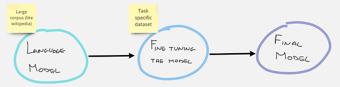

Fine-Tuning for Domain Adaptation in NLP
Create your custom model and upload it on Hugging Face.
October 15, 2024 · Fine-tuning, NLP
Introduction
Often when we want to solve an NLP problem, we use pre-trained language models, obviously being careful to choose the most appropriate model that has been fine-tuned on the language of our interest.
For example, if I’m working on a project that is based on the Italian language I will use models such as dbmdz/bert-base-italian-xxl-cased or dbmdz/bert-base-italian-xxl-uncased.
These language modelsusually work very well on generic text, but often do not fit well when we use them in a specific domain, for example, if we use them in a medical or scientific domain which has its peculiar language. For this purpose, we need to apply domain adaptation!
Domain adaptation, it’s when we fine-tune a pre-trained model on a new dataset, and it gives predictions that are more adapted to that dataset.
What does fine-tuning mean?
Fine-tuning in NLP refers to the procedure of re-training a pre-trained language model using your own custom data. As a result of the fine-tuning procedure, the weights of the original model are updated to account for the characteristics of the domain data and the task you are interested in.

In our case we will fine-tune using a masked language model task (MLM). In other words our dataset will not have prefixed labels, but for each sentence some words will be hidden (masked), and the model will have to guess which are the hidden words.
Dataset
The dataset we are going to use for this purpose is public and can be found on kaggle at this link. This dataset contains around 13k news. We are only interested about the content of the review, so you only need to use the text column. In this article I will not describe the procedure to download the dataset from kaggle and extract the csv file, in case you have problems you can read the other articles I posted on TDS.
Hands-On
Let’s import all the libraries that we will need first.
!pip install -q transformers
!pip install -q datasets
import multiprocessing
import pandas as pd
import numpy as np
import torch
import matplotlib.pyplot as plt
import transformers
from sklearn.model_selection import train_test_split
from datasets import Dataset
from transformers import AutoModelForMaskedLM
from transformers import AutoTokenizer, AutoConfig
from transformers import BertForMaskedLM, DistilBertForMaskedLM
from transformers import BertTokenizer, DistilBertTokenizer
from transformers import RobertaTokenizer, RobertaForMaskedLM
from transformers import Trainer, TrainingArguments
from transformers import DataCollatorForLanguageModeling
from tokenizers import BertWordPieceTokenizerLet’s define the hyperparameters needed for the model training. (Feel free to play with them if you have enough computational power!)
# HYPERPARAMS
SEED_SPLIT = 0
SEED_TRAIN = 0
MAX_SEQ_LEN = 128
TRAIN_BATCH_SIZE = 16
EVAL_BATCH_SIZE = 16
LEARNING_RATE = 2e-5
LR_WARMUP_STEPS = 100
WEIGHT_DECAY = 0.01Let’s start with data preparation. Load your csv file, split it and transform it to a Dataset object.
# load data
dtf_mlm = pd.read_csv('news-adaptive-tuning_dataset.csv')
#dtf_mlm = dtf_mlm.rename(columns={"review_content": "text"})
# Train/Valid Split
df_train, df_valid = train_test_split(
dtf_mlm, test_size=0.15, random_state=SEED_SPLIT
)
len(df_train), len(df_valid)
# Convert to Dataset object
train_dataset = Dataset.from_pandas(df_train[['text']].dropna())
valid_dataset = Dataset.from_pandas(df_valid[['text']].dropna())Now you have to choose your strating model and tokenizer. I like to use distilbert because it’s light and faster to train.
'''
bert-base-uncased # 12-layer, 768-hidden, 12-heads, 109M parameters
distilbert-base-uncased # 6-layer, 768-hidden, 12-heads, 65M parameters
'''
MODEL = 'bert'
bert_type = 'bert-base-cased'
if MODEL == 'distilbert':
TokenizerClass = DistilBertTokenizer
ModelClass = DistilBertForMaskedLM
elif MODEL == 'bert':
TokenizerClass = BertTokenizer
ModelClass = BertForMaskedLM
elif MODEL == 'roberta':
TokenizerClass = RobertaTokenizer
ModelClass = RobertaForMaskedLM
elif MODEL == 'scibert':
TokenizerClass = AutoTokenizer
ModelClass = AutoModelForMaskedLM
tokenizer = TokenizerClass.from_pretrained(
bert_type, use_fast=True, do_lower_case=False, max_len=MAX_SEQ_LEN
)
model = ModelClass.from_pretrained(bert_type)In order to feed the model, we need to tokenize our dataset.
def tokenize_function(row):
return tokenizer(
row['text'],
padding='max_length',
truncation=True,
max_length=MAX_SEQ_LEN,
return_special_tokens_mask=True)
column_names = train_dataset.column_names
train_dataset = train_dataset.map(
tokenize_function,
batched=True,
num_proc=multiprocessing.cpu_count(),
remove_columns=column_names,
)
valid_dataset = valid_dataset.map(
tokenize_function,
batched=True,
num_proc=multiprocessing.cpu_count(),
remove_columns=column_names,
)Now we can actually train our model. The DataCollatorForLanguageModeling is a function that allows us to train the model on masked language task very easily.
data_collator = DataCollatorForLanguageModeling(
tokenizer=tokenizer, mlm=True, mlm_probability=0.15
)
steps_per_epoch = int(len(train_dataset) / TRAIN_BATCH_SIZE)
training_args = TrainingArguments(
output_dir='./bert-news',
logging_dir='./LMlogs',
num_train_epochs=2,
do_train=True,
do_eval=True,
per_device_train_batch_size=TRAIN_BATCH_SIZE,
per_device_eval_batch_size=EVAL_BATCH_SIZE,
warmup_steps=LR_WARMUP_STEPS,
save_steps=steps_per_epoch,
save_total_limit=3,
weight_decay=WEIGHT_DECAY,
learning_rate=LEARNING_RATE,
evaluation_strategy='epoch',
save_strategy='epoch',
load_best_model_at_end=True,
metric_for_best_model='loss',
greater_is_better=False,
seed=SEED_TRAIN
)
trainer = Trainer(
model=model,
args=training_args,
data_collator=data_collator,
train_dataset=train_dataset,
eval_dataset=valid_dataset,
tokenizer=tokenizer,
)
trainer.train()
trainer.save_model("your_path/model") #save your custom modelPerplexity Evaluation
Is the custom model you created really better than the source model? To understand if there have been improvements we can calculate the perplexity of the model! If you are interested in this metric read this article.
tokenizer = AutoTokenizer.from_pretrained('bert-base-uncased', use_fast = False, do_lower_case=True)
model = AutoModelForMaskedLM.from_pretrained('bert-base-uncased')
trainer = Trainer(
model=model,
data_collator=data_collator,a
#train_dataset=tokenized_dataset_2['train'],
eval_dataset=valid_dataset,
tokenizer=tokenizer,
)
eval_results = trainer.evaluate()
print('Evaluation results: ', eval_results)
print(f"Perplexity: {math.exp(eval_results['eval_loss']):.3f}")
print('----------------\
')
import glob
import math
path = "your_path/model"
for modelpath in glob.iglob(path):
print('Model: ', modelpath)
tokenizer = AutoTokenizer.from_pretrained(modelpath, use_fast = False, do_lower_case=True)
model = AutoModelForMaskedLM.from_pretrained(modelpath)
trainer = Trainer(
model=model,
data_collator=data_collator,
#train_dataset=tokenized_dataset_2['train'],
eval_dataset=valid_dataset,
tokenizer=tokenizer,
)
eval_results = trainer.evaluate()
print('Evaluation results: ', eval_results)
print(f"Perplexity: {math.exp(eval_results['eval_loss']):.3f}")
print('----------------\
')
Hopefully you noticed an improvement in the model perplexity!
Publish your custom model on Hugging Face!
If you trained your model on a personal dataset, or a particular dataset you created yourself, your model could probably be useful to someone else. Upload it to your Hugging Face account with just a few lines of code!
First of all create a personal account on Hugging Face, and then run the following commands.
!pip install huggingface_hub
#login hugging face
from huggingface_hub import notebook_login
notebook_login()
#push your model
model = DistilBertForMaskedLM.from_pretrained("your_path/model")
tokenizer = AutoTokenizer.from_pretrained(pretrained_model_name_or_path = "your_path/model")
model.push_to_hub("cool-name-of-your-model")
tokenizer.push_to_hub("cool-name-of-your-model")Done! Now your model is on Hugging Face and anyone can download and use it! Thank you for your contribution!
Conclusion
If you also enjoyed creating your own custom language model and posting it on Hugging Face, please continue to create new ones and make them available to the community.
If you want to have a look to my model trained on space articles (remote sensors, satellites,…) here it is:
Chramer/remote-sensing-distilbert-cased · Hugging FaceThe field of earth observation is increasingly growing. More and more data scientists are interested about this domain…huggingface.cohuggingface.coThe End
Author : Marcello Politi
 Linkedin, Twitterlinkedin.com
Linkedin, Twitterlinkedin.com
This was published on Towards Data Science